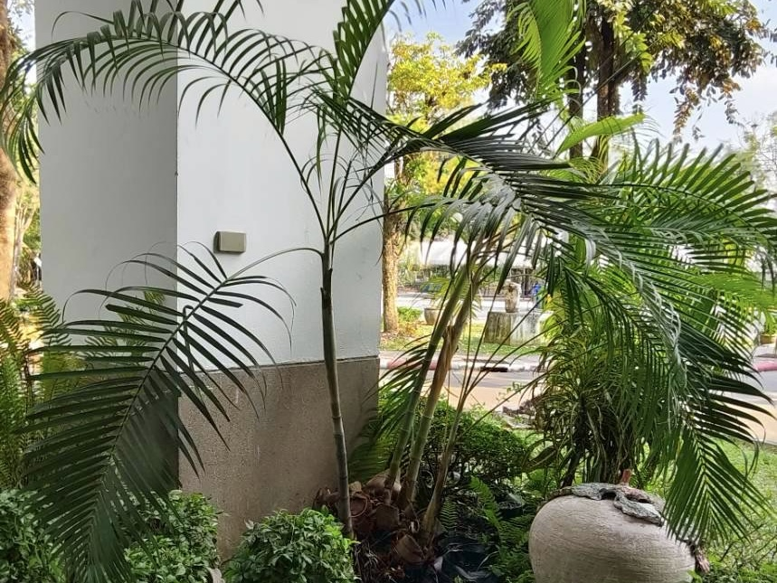
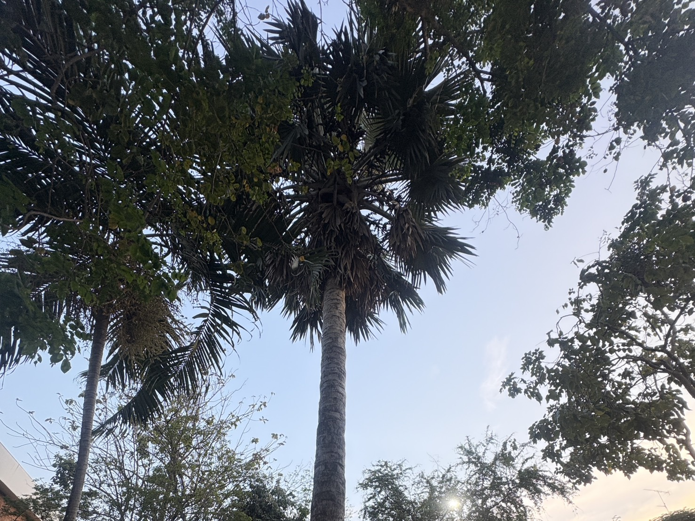

ต้นหมาก
วงศ์: Arecaceae (วงศ์ปาล์ม)
ชื่อวิทยาศาสตร์: Areca catechu L.
ไปที่ต้นไม้

ต้นปาล์มพัด
วงศ์: Arecaceae (วงศ์ปาล์ม)
ชื่อวิทยาศาสตร์: Pritchardia Pacifica Seem.&H.wendl
ไปที่ต้นไม้
ต้นปาล์ม
วงศ์: Arecaceae (วงศ์ปาล์ม)
ชื่อวิทยาศาสตร์: Roystonea regia
ไปที่ต้นไม้